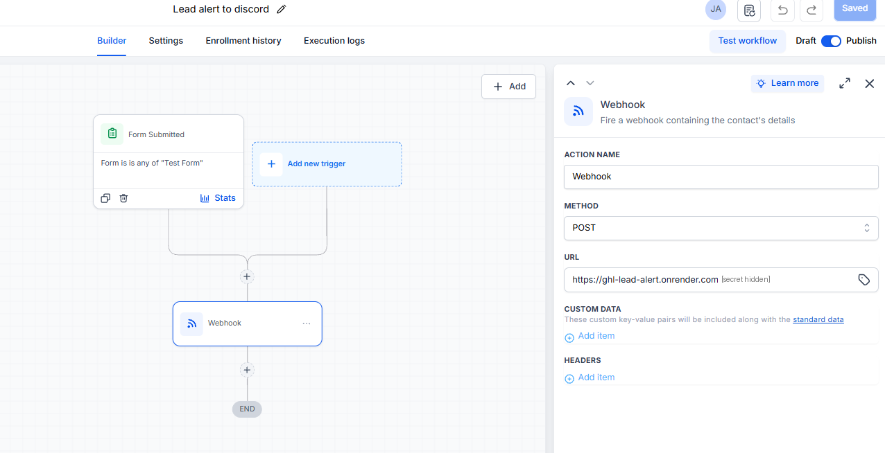
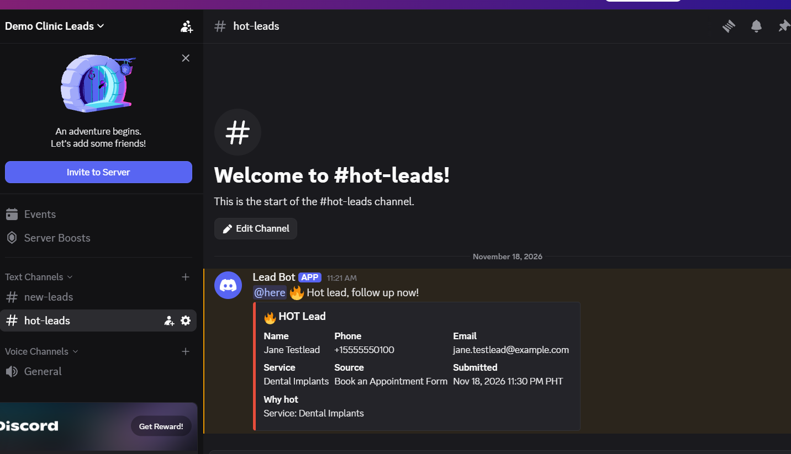
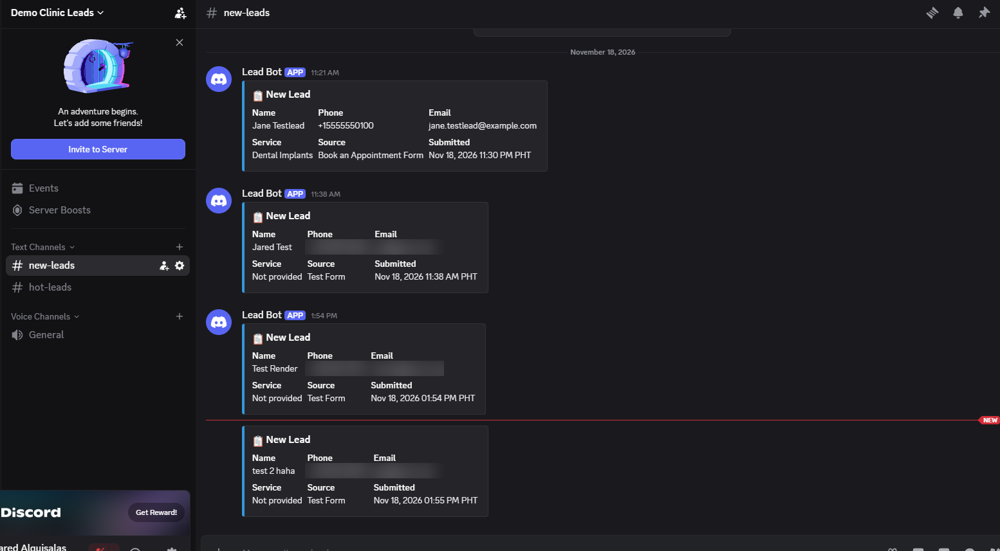

GHL Instant Lead Alert
A small web service that sends every new GoHighLevel lead to Discord within 5 seconds. Urgent leads go to their own channel and ping the team. Built with Claude Code.
The problem
Speed to lead decides who gets the booking. But most small teams find out about new leads too late:
- Leads arrive after hours. A form comes in at 9pm. The clinic sees it the next morning.
- Email alerts get buried. GHL notifications sit in a busy inbox with everything else.
- Every lead looks the same. Front desk can’t tell an implant enquiry from a general question.
- The lead books elsewhere. By the time someone calls back, a faster clinic has them.
The solution
A GHL workflow sends each form submission to a small service I built. The service checks the request, scores the lead, and posts an alert to the right Discord channel. The team sees it on their phones.
| Step | What it does |
|---|---|
| Receive | A GHL workflow (Form Submitted → Webhook) posts the lead to the service |
| Secure | Rejects any request without the secret key |
| Score | Marks a lead hot if the service is Implants, Invisalign or Emergency, or the notes say ASAP, today or pain |
| Alert | Posts a card with name, phone, email, service, source and time in Philippine time |
| Route | Every lead goes to #new-leads. Hot leads also go to #hot-leads with an @here ping, a red card and the reason it’s hot |
| Log | Saves every lead to a CSV log, and problems to an error log |
| Recover | Retries Discord once if it fails. Always answers GHL right away, so leads are never sent twice |
Proof
1. The GHL workflow
Trigger: Form Submitted. Action: Webhook (POST) to the live service on Render. The secret key is hidden.

2. A hot lead, flagged and pinged
A fake implant enquiry. It lands in #hot-leads with an @here ping and shows why it’s hot.

3. Every lead in #new-leads
The first card is the local test. The others are real GHL form submissions: one through a local tunnel, and two through the live service on Render. Test phones and emails are blurred.

Results
Honesty note: These are test results with fake leads in a test sub-account, not a live client. I timed each alert by hand with a stopwatch, from clicking submit to the alert appearing in Discord.
| Test | Result |
|---|---|
| Local test with a fake hot lead | Posted to both channels. Hot card showed the reason. |
| Real GHL form → local tunnel (ngrok) | Alert posted to #new-leads |
| Speed test: 10 real GHL form submissions → live service on Render | 10 of 10 alerts reached Discord |
| Average time from submit to alert | 3.9 seconds |
| Fastest / slowest alert | 2.6 seconds / 5.0 seconds |
| Health check on the live service | 200 OK |
| Request with a wrong secret key | Rejected (401). Nothing sent to Discord. |
| Secrets check before pushing to GitHub | No webhook URLs or keys in the code |
My decisions and why
- Discord, not more email. It’s free, has a good phone app, and pings cut through. The same build can post to Slack later.
- Simple, editable hot rules. The rules are two short keyword lists. A clinic can change them without touching the rest of the code.
- Show why a lead is hot. Staff trust the ping more when the card says “Service: Dental Implants”.
- Always answer GHL fast. The service replies first, then does the work. GHL never resends, so no duplicate alerts.
- Secrets stay out of code. Webhook URLs and the key live in environment variables, not in GitHub.
- Hosted close to the team. Deployed in Render’s Singapore region, the closest to the Philippines.
Practice discovery call
I ran a mock discovery call with a fictional two-branch dental clinic. It showed what a real client would change:
- Their own hot rules. Implants, All-on-4, braces and emergencies like swelling or a cracked tooth.
- Local language. Patients write in Bisaya and Tagalog, like “sakit kaayo” or “ngayon na”.
- Branch routing. Each branch has its own staff, so leads should go to the right person.
- Facebook lead ads. 60% of their leads come from Facebook forms, which need a second GHL trigger.
Lesson: I guessed the hot rules for this demo. With a real client, they decide them on the discovery call.
How I used AI
Honesty note: Claude Code wrote most of the code. I set the rules, made the decisions and tested every step.
- I wrote the brief first. A CLAUDE.md set the rules: Flask and requests only, beginner-friendly code, secrets in environment variables, fake data only.
- I built in small steps. Receiver, then Discord alerts, then scoring, then logging, then retries. I tested each step before moving on.
- I connected the real tools. I set up the Discord channels, the GHL workflow, the tunnel and the Render deployment.
What this means for a clinic or coach
- The team sees new leads on their phones in seconds (3.9 on average in testing), not hours later in email.
- Urgent leads get called first.
- Faster replies mean more booked consults.
- Every lead is logged, even if a notification fails.